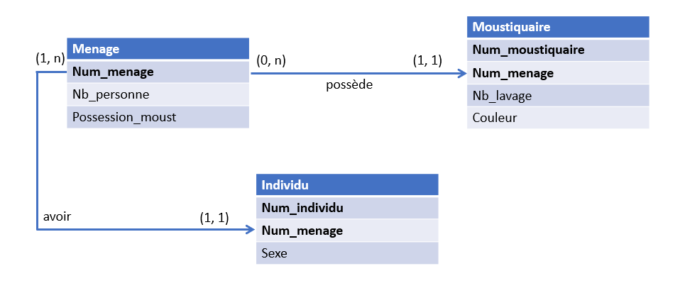
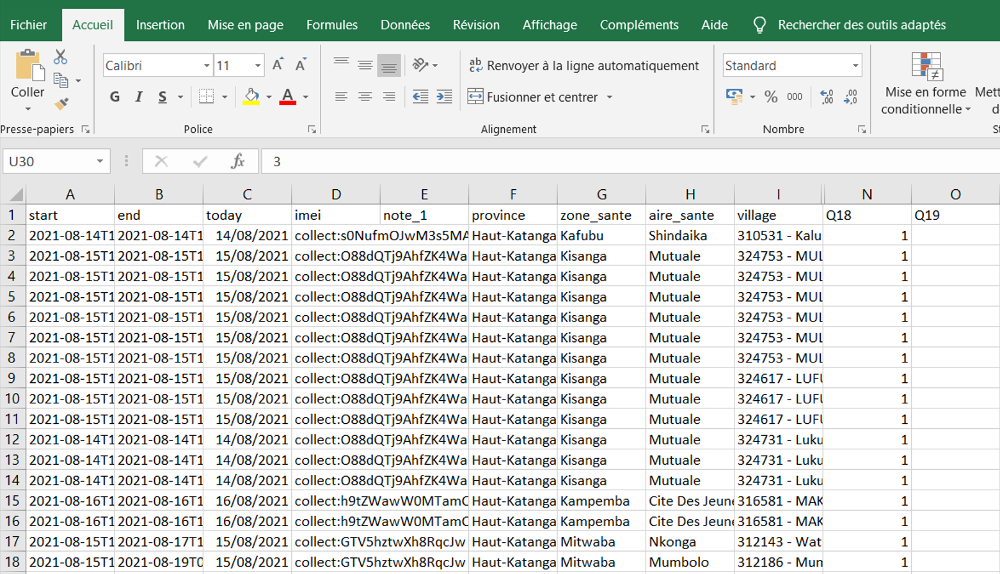

3 Introduction aux bases de données
Ce chapitre est une introduction aux bases de données. Il s’agit de donner une vue globale sur ce que sont les bases de données sans entrer dans les détails de la théorie des bases de données.
3.1 Définition
Les données collectées sur terrain doivent être stockées pour leur utilisation future.
Les bases de données jouent un rôle crucial dans la collecte de données avec ODK. Une base de données est un système de stockage d’informations organisées et structurées. Dans le contexte d’ODK, la base de données permet de stocker toutes les données collectées à partir du formulaire. Les données collectées peuvent être analysées, traitées et utilisées pour prendre des décisions éclairées. En utilisant une base de données, vous pouvez assurer la stabilité et l’accessibilité de vos données pour une utilisation future.
Le modèle relationnel est le modèle le plus communement utilisé pour stocker les données. Dans une base de données relationnelle, les données sont stockées dans des tables.
3.2 Table
Une table est un ensemble de données organisées sous forme d’un tableau où les colonnes correspondent à des attributs ou variales (une colonne peut stocker des numéros de téléphone, une autre le sexe…) et les lignes à des enregistrements, également appelés entrées.
3.3 Exemple
Donnons un exemple :
Vous êtes chargé de concevoir un formulaire pour collecter les données sur l’utilisation des moustiquaires comme moyen de prévention du paludisme par les ménages d’une contrée. Il est spécifié que vous devez collecter les données sur les chefs de ménages, chaque individu du ménage et les différentes moustiquaires. Sur base d’un questionnaire papier existant, vous créez un formulaire qui sera utilisé pour collecter les données.
En terme de base de données, les données sur les chefs de ménages, les individus et les moustiquaires seront logées dans différentes tables de la base.
La raison est que ces différentes entités représentent différentes unités statistiques. Aussi, à un ménage peut correspondre plusieurs individus et plusieurs moustiquaires. C’est ce qu’on appelle cardinalité. Séparer ces données dans différentes tables permet d’éviter de dupliquer inutilement les données (rédondance)
L’image suivante montre les relations entre différentes tables dans la base de données de l’exemple précédent.
3.4 Cardinalité
les différents chiffres entre parenthèses reprénsent les cardinalités.
Ces cardinalités peuvent être expliquées comme suit :
- (0, n) veut dire qu’un ménage peut posséder aucune moustiquaire ou en posséder plusieurs,
- (1, 1) entre les tables
MenageetMoustiquaireveut dire qu’une moustiquaire appartient à un et un seul ménage, - (1, n) signifie qu’un ménage doit avoir au moins un individu,
- (1, 1) entre les tables
MenageetIndividuveut dire qu’un individu appartient à un et un seul ménage.

Les données d’une table peuvent se présenter sous forme d’une feuille Excel comme le montre l’image suivante.
Les lignes représentent différentes ménages interrogés et les colonnes représentent les différentes variables permettant de décrire ces ménages.

3.5 Type de variables statistiques
Au sens statistique, une variable est un caractère permettant de décrire une unité statistique. Il peut s’agir par exemple du sexe, de l’âge, du statut professionnel et bien d’autres.
Nous distinguons principalement deux types de variables : quantitative et qualitative.
3.5.1 Variable quantitative
Une variable quantitative est une variable qui peut être mesurée par des nombres réels. Elle permet de mesurer une grandeur numérique, un nombre, une quantité ou une mesure qui est exprimée en chiffres. Les variables quantitatives peuvent être classées soit comme discrètes (qui prennent des valeurs entières) soit comme continues (qui prennent des valeurs dans un continuum).
Les exemples de variables quantitatives discrêtes incluent le nombre de personnes, le nombre de réponses correctes dans un test et ainsi de suite. Pour le cas continu, nous pouvons citer le poids, la taille, le revenu, la distance parcourue, l’âge exact, etc.
3.5.2 Variable qualitative
Une variable qualitative est une variable qui mesure une caractéristique qui ne peut pas être mesurée en nombres. En d’autres termes, elle est utilisée pour décrire des qualités ou attributs plutôt que des quantités. Les variables qualitatives peuvent être catégorisées comme nominales ou ordinales. Les variables nominales comprennent des catégories qui n’ont pas de relation hiérarchique les unes avec les autres, telles que la couleur des yeux ou le genre. Les variables ordinales sont des catégories qui sont ordonnées hiérarchiquement, mais qui ne peuvent pas être mesurées en chiffres exacts, comme le niveau d’éducation ou le rang d’un participant dans une compétition.
3.6 Comment choisir les noms de variables ?
Lorsque vous créez un formulaire pour la collecte mobile, vous partez d’un qestionnaire papier. Il convient alors de trouver des noms de variables pour ces différentes questions. Alors comment choisir les noms de variables ?
Utilisez des noms de variables clairs, descriptifs et informatifs. Évitez les noms génériques ou ambigus.
Utilisez des noms de variables simples et concis.
Utilisez des lettres minuscules pour le nom des variables. Évitez d’utiliser des espaces ou des caractères spéciaux.
Assurez-vous que les noms de variables sont cohérents et correspondent bien aux questions du questionnaire papier.
Pour faciliter la correspondance entre votre questionnaire papier et votre formulaire ODK, vous pouvez utiliser les mêmes noms pour les variables dans les deux cas (par exemple Q100, Q101, etc). Cela aidera à éviter toute confusion et à garantir que les données sont correctement transposées dans le formulaire ODK. Ceci est surtout conseillé lorsque votre question a un grand nombre de variables.